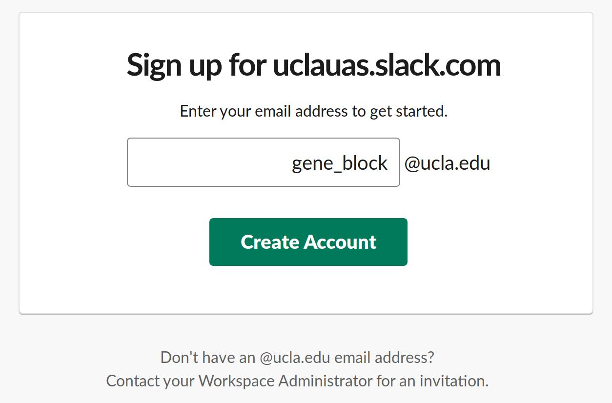
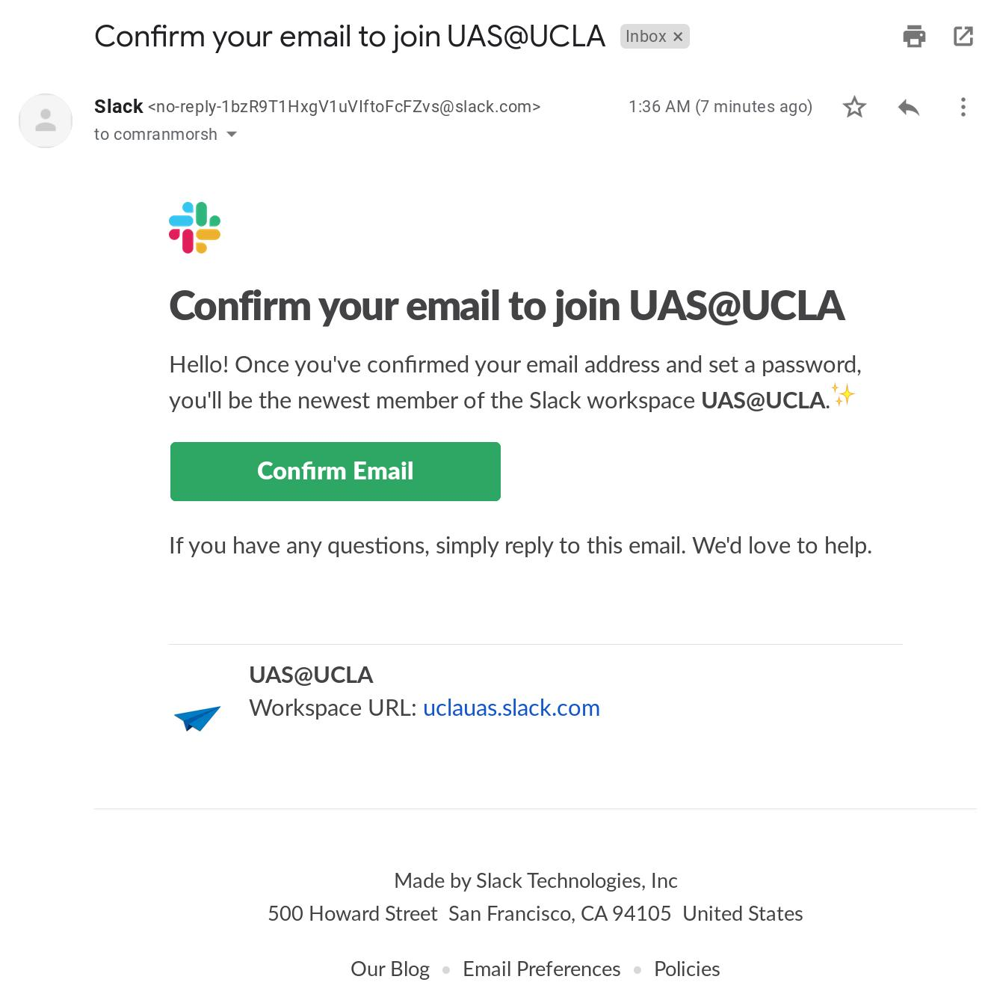
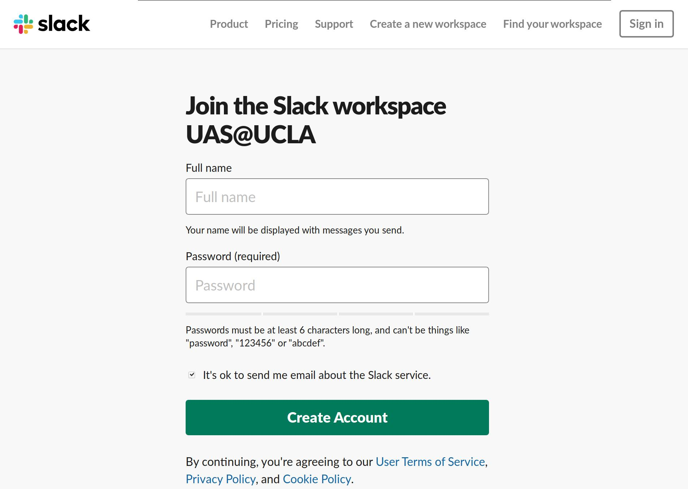
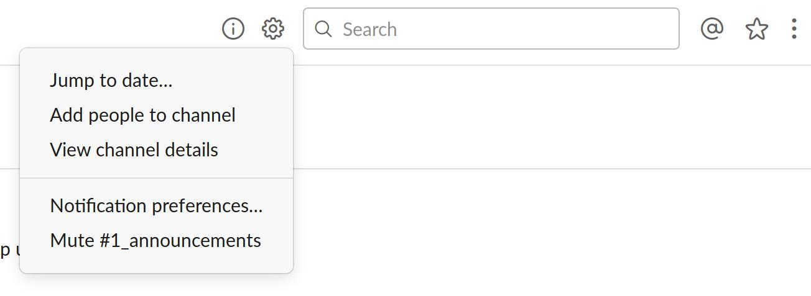
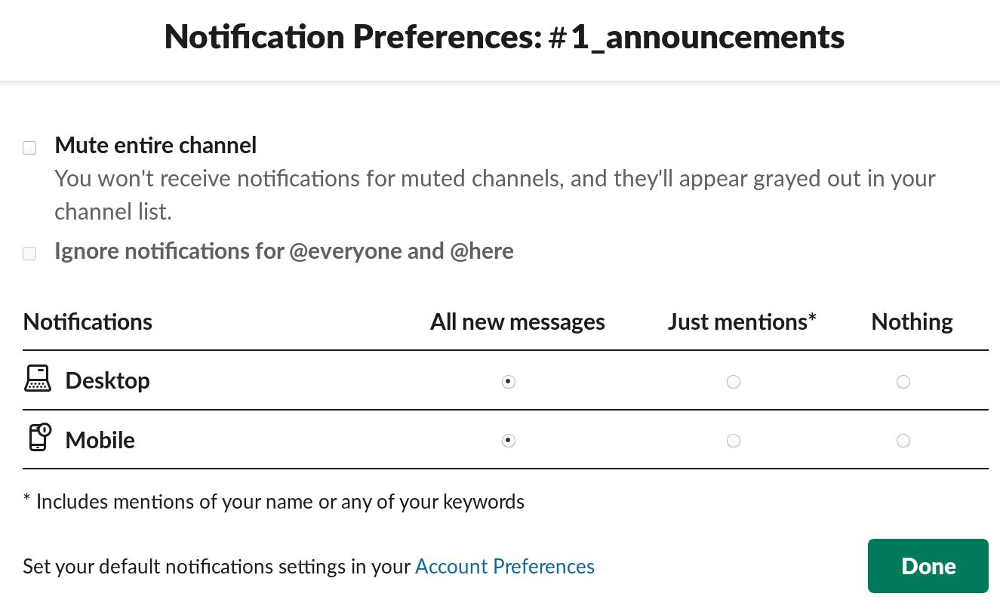

Use our registration page here to do so. Note that the g. prefix is NOT required. 
Check your UCLA email for a confirmation. 
After confirming your email, you'll be prompted to create an account. Please you your first and last name (both first character capitalized) for the Full name field! 
Every student should have a UCLA email (typically something like ucla_login@ucla.edu). To check your email, go to gmail.com and sign in (with ucla_login@g.ucla.edu as the username). Information for how to do this is available here.
In the event that you would like to use a different email or are having trouble with your campus email, please use the contact form at the bottom of our homepage and request to be added to our Slack channel (using the email field as the email you intend to use).
Join NowChannels on Slack are used to distinguish communication on different projects. UAS@UCLA has adopted the following default channels:
Everyone who joins our Slack workspace gets added to these channels automatically. Because of this, we don't recommend spamming them too much, since everyone on the team will get a notification. For more specific discussions, please create a separate channel and invite only the people that need to be in the discussion.
If you can't find information about the project or program you are looking for, are interested in more specific team information, or are just curious, click on Add channels->Browse all channels to view all public Slack channels.
In addition, to contact one of our team leads, use the Direct Message feature and type in their name. Use our convenient Members webpage to identify who is who!
Slack has an iOS and Android app that you can download to stay on top of everything going on within our team, in addition to other organizations that you are also signed up for on Slack. In addition, there are Mac and Windows desktop apps that can run directly on your computer.
We highly recommend downloading the Slack application on your phone & enabling all notifications to stay on top of everything. Due to the size of our team, we cannot verify that everyone has their notifications set up correctly, so it is up to each individual person to set it up as they wish. At a minimum, make sure you are getting all notifications for our #1_announcements channel. 
